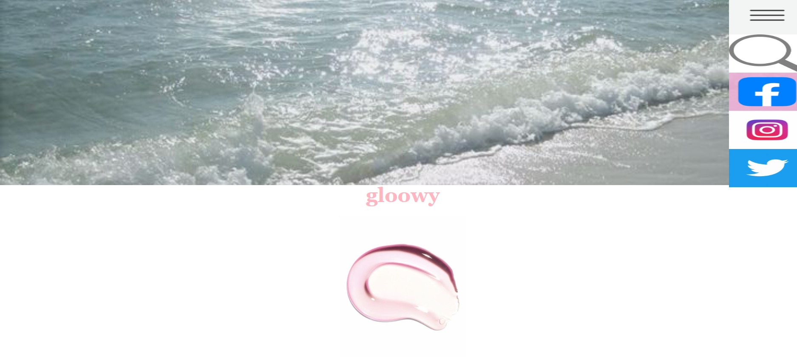
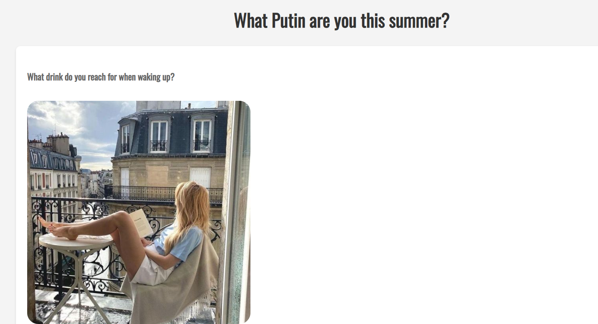

elizabeth.
elizabeth.

Lizy is a rising senior at BHSN, and hopes to accomplish much more in her career.
love ya!
life tip: do what makes you happy. i know that i function better with a little buddy, so I got dolchi.
Hello! My name is Lizy, and I am passionate about wellness and computer. I enjoy hiking, biking, along with listening to podcasts and I'm excited to share my experiences and learn a little more.
I am a current student at North, but I am on track to graduate with academic honors.
I have one month's worth of experience in HTML, CSS, and Java script.


Outside of work, I enjoy walking, biking, and doing things that keep me mindful.
This website is a site for change. Gloowy was meant to act as a good hub for information related but not limited to beauty, health, and holistic wellness.
The "Spirit Animal Choose Your Own Adventure" game starts with a brief introduction, inviting players to embark on a journey to discover their spirit animal. Players will make a series of choices that lead them through different paths, ultimately revealing their spirit animal based on the decisions they made. This game used a mixture of HTML, CSS, and a little Java script in order to hide previous pages.

My Javascript game was a bit of a less serious one, so I decided to have fun with it. I first tried using radio buttons but then ended up having to use a type in menu (which shortened the amount of option choices I had, but alas) But Otherwise, it was quite enjoyable to complete.
The use of this source was due to the enhanced user engagement I got out of it. Videos can capture attention more effectively than text or images alone, making users more likely to stay on your site longer. Then, improved Information Delivery: Complex ideas or instructions can be conveyed more clearly and succinctly through video. That along with the SEO Benefits: Videos can improve your site's SEO by increasing time on page and providing additional content for search engines to index. Last but not least Visual Appeal: Videos add dynamic content to your site, making it more visually interesting and engaging.
This was a site I used to get some clarity of topics I wasn't so confident about.
Cute little website with many tips.
This website is amazing for a beginner like me, since they have step by step examples on how to get to a desired result.
Various things like the hover image effects I got off of here.
Proofreading, along with letting me know if there was a simpler way to complete a task really helped me.
ChatGPT was very useful in telling me where my code went wrong.